MAESTRO: Orchestrating Robotics Modules with Coding Agents for Zero-Shot Generalist Robots
Overview of Maestro
TLDR: MAESTRO turns a vision-language coding agent into a generalist robot policy by pairing a curated robotics tool library with an orchestration harness, matching or surpassing evaluated VLA models on tabletop tasks without new teleoperation data.
- Tools and harness: the agent composes perception, planning, and control tools, verifies their outputs, and recovers from execution failures.
- Zero-shot manipulation: MAESTRO matches or surpasses the evaluated VLA and Base CaP baselines in our tabletop comparison and performs diverse mobile manipulation tasks. The main experiments do not invoke a VLA tool.
- Ablation finding: expanding the tool library improves average task progress with the full harness, while adding tools without it does not reliably improve progress.
- Case studies: cross-trial code improvement, more efficient execution through VLA tool use, and autonomous seed demonstrations for downstream data augmentation.
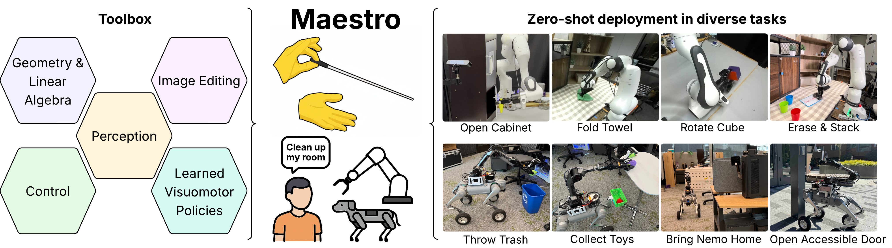
Maestro receives language instruction and leverages a set of tools to complete diverse tasks in a zero-shot setting.
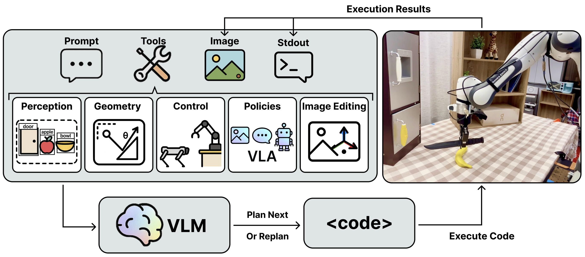
Given prompt and images, VLM plans by writing and executing code that integrates perception, spatial reasoning, control, learned visuomotor policies, and image editing. Execution results (images and stdout) provide feedback for reacting and replanning, forming a closed-loop perception–action–learning cycle. This enables adaptive long-horizon manipulation, as illustrated in the tabletop example on the right (instruction: Grasp the knife by the handle and cut the banana in the middle).
Abstract
Today’s dominant route to generalist robots scales robotics data to train end-to-end policies. We instead use a vision-language model (VLM) as a coding agent that writes robot programs using a curated library of perception, planning, and control tools. MAESTRO’s orchestration harness packages multi-step perception and action procedures into callable tools and guides their use through a plan–act–replan loop, using visual and execution feedback to verify outcomes and recover from failures. With this tool library and harness, MAESTRO matches or surpasses state-of-the-art vision-language-action (VLA) models zero-shot in our tabletop comparison and performs diverse mobile manipulation tasks, without collecting new teleoperation data or invoking a VLA tool. Ablations show that expanding the tool library improves average task progress with the full harness, while adding tools without it does not reliably improve progress. Additional case studies examine cross-trial code improvement, VLA tool use, and autonomous seed demonstrations for downstream data augmentation. We argue that such agentic systems offer a complementary, far less-explored axis to data scaling for general-purpose robots.
Interactive Agent Dashboard
To provide full transparency into Maestro's decision-making process, we present an interactive agent dashboard that replays a complete robot manipulation trial in real time. As the task progresses, the dashboard simultaneously reveals every layer of the system: the subtask progression through the overall plan, the VLM agent's reasoning and planning traces, the live code being generated and executed line-by-line, and perception outputs produced by the invoked tool modules. All panels stay tightly synchronized with the task timeline, offering a comprehensive view of how Maestro orchestrates diverse modules to solve complex manipulation tasks. We also include a trial where the agent detects a subtask failure in real time and autonomously replans to correct it, showcasing Maestro's closed-loop adaptability.
Tabletop Manipulation Videos
"Open the lower cabinet door by pulling the yellow door handle."
"Fold the four corners of the towel to the center"
"Erase instructions on the whiteboard, then follow the instruction to stack cubes."
"Rotate the cube so that one of the purple side faces up."
"Put the tennis ball into the bowl."
"Hang the mug cup onto the mug hanger stand."
"Orthogonally cut the banana in half with the black knife."
"Clean the table by putting all the items into the bowl, from big size to small size."
Mobile Manipulation Videos
"Press the button to open the door, then enter the building."
"Search for the orange plush ball and return."
"Trash out the green plush ball into the garbage can."
"Collect all plush toys on the white table"
Evaluation across diverse settings
We use the STAR-Gen taxonomy to evaluate five settings per task: one initial setting and four generated settings with changes to object appearance, poses, action verbs, and object identity. Settings are held fixed across compared methods. The tabletop comparison covers eight tasks and four methods, for 40 scored trials per method.
Human reviewers assign the task-progress and task-completion scores independently of the agent’s monitor. Task progress is a 0–100 partial-credit score based on verifiable substeps. The figure shows each method’s per-trial scores, with colored markers on a white-to-black progress scale.
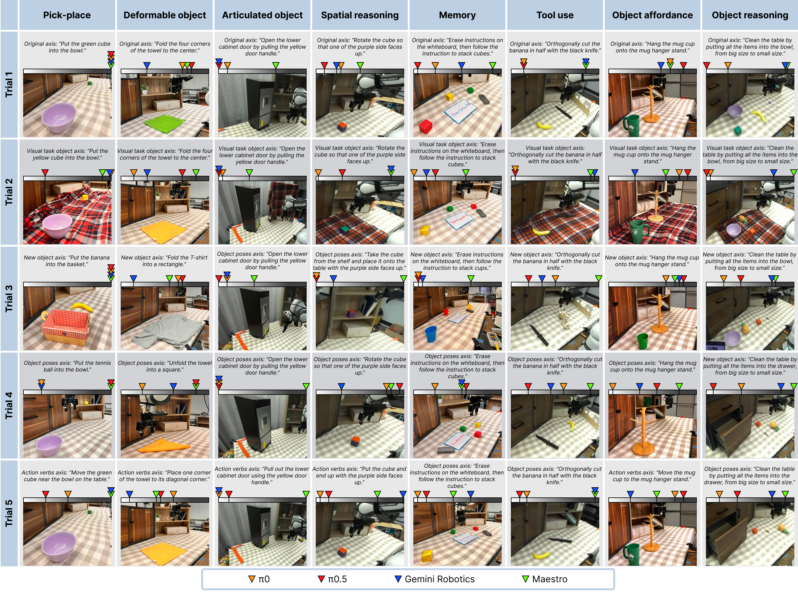
MAESTRO has the highest mean progress on six of eight tasks, while outcomes vary by task and setting. The VLA baselines reach perfect scores in some evaluated settings and substantially lower scores in others. On pick-and-place, the standard errors are ±16.6 and ±18.4 for π₀ and π₀.₅, compared with ±2.0 for MAESTRO.
Zero-shot manipulation results
We evaluate task progress on a Franka-based DROID tabletop platform and a Unitree Go2-W wheeled quadruped with an AgileX PiPER arm. The default library includes π₀.₅ as a callable tool, but the main benchmark results below do not invoke it.
Tabletop manipulation
MAESTRO has the highest mean task progress on six of eight tasks in the selected five-trial comparison. π₀.₅ has the highest mean on fold towel and hang mug. On rotate cube, MAESTRO reaches 88.0 ± 5.6, compared with 52.0 ± 16.5 for the Gemini Robotics Agent, 23.0 ± 15.0 for π₀, and 30.0 ± 17.0 for π₀.₅.
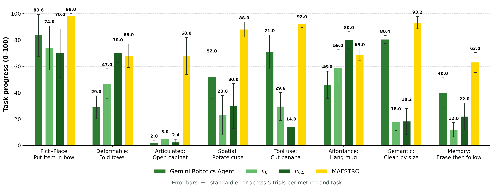
Mobile manipulation
We evaluate MAESTRO alone on the mobile platform, reporting progress across four tasks. A cached semantic map supports the long-horizon tasks; multi-view observations support exploration, and keypoint selection supports pressing the door-opening button. Remaining failures primarily involve low-level execution.
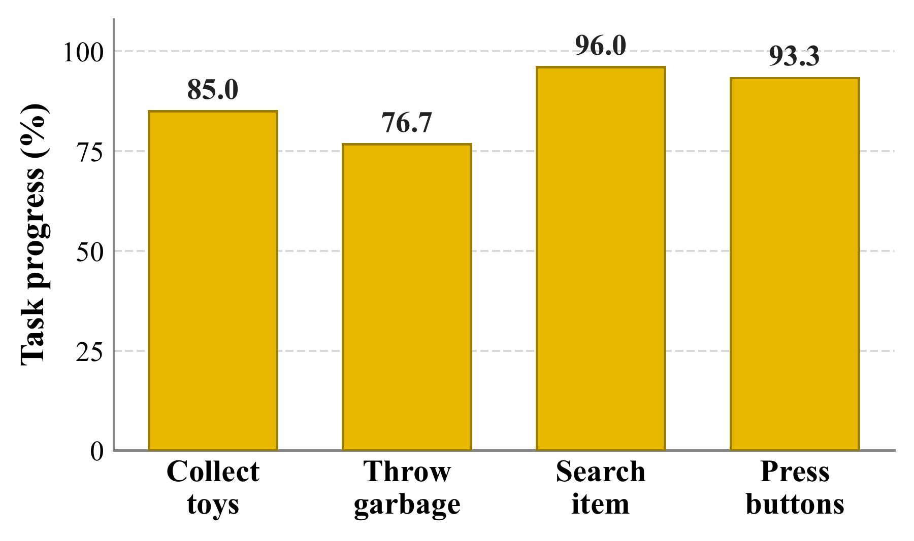
Tools and harnesses work together
MAESTRO builds on the closed-loop coding-agent pattern of Base CaP. Its orchestration harness packages multi-step procedures into callable tools, provides procedural guidance, manages execution, and renders tool outputs so the VLM can inspect them and replan.
We expand the library from Base CaP (S0) through perception (S1), grasping and control (S2), and geometry (S3). At each stage we compare Full harness (I+E), Interface only (I), Execution only (E), and No harness. Interface retains encapsulation and procedural knowledge; Execution retains closed-loop control, infrastructure, and feedback.
Across the three ablation tasks, the full-tool average is 76.9 with the full harness, 59.3 with Interface only, 34.0 with Execution only, and 33.0 without the harness. The starting point without added robotics tools scores 32.3. Expanding the library improves average progress with the full harness; adding tools alone does not reliably improve progress.
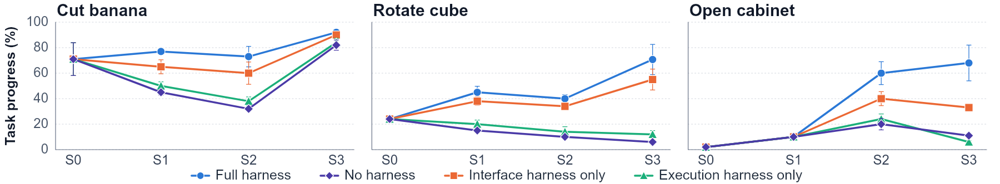
A concrete replan iteration. On the whiteboard-erase task, the first generated actor_code grasps 1 cm too high. Using the post-execution image and robot state, MAESTRO revises grasp_pos[2], and the retry succeeds.
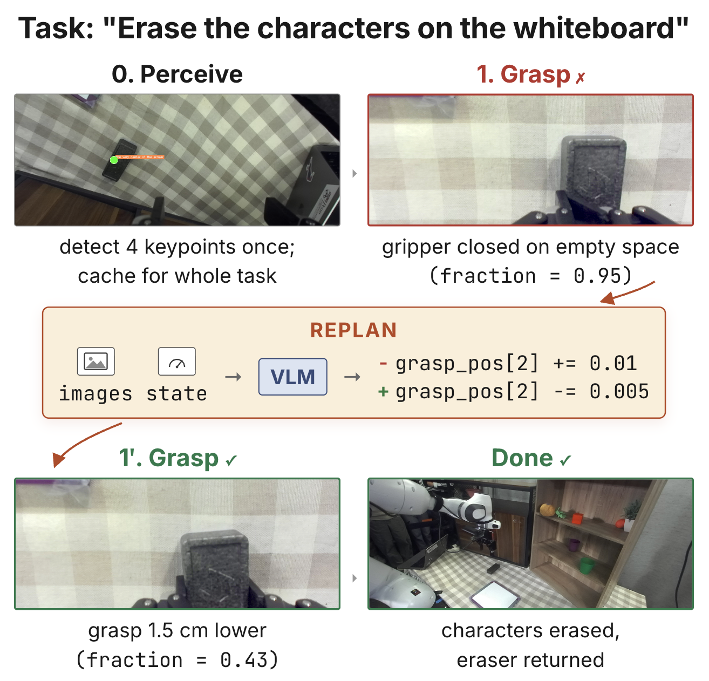
Tool-Use Analysis
We analyze 2,062 function calls from 18 modules across 62 trials and 9 task categories. This pooled trace analysis includes the separate VLA-as-tool study. Its trial set differs from the 40-trial-per-method main benchmark. Filter by task to explore how perception, control, grasping, and planning tools are composed.
Beyond the interactive view above, we render the same 2,062 tool calls (drawn from 18 modules across 62 trials and 9 task categories) as static analyses. The aggregate statistics show per-module call frequencies, calls grouped by category, and the most common function bigrams.
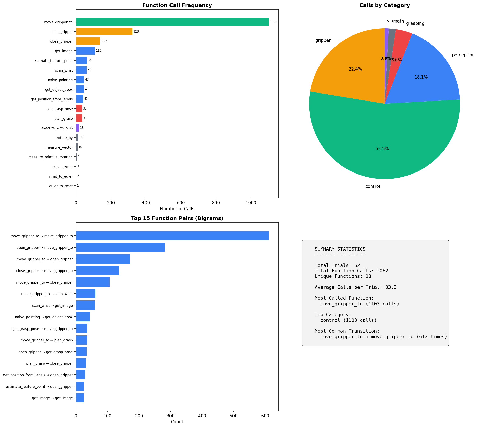
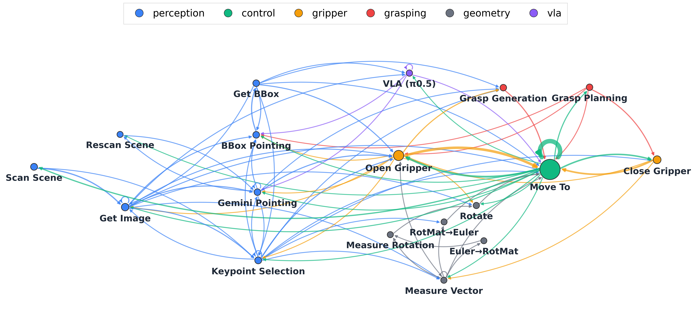
Workflows are task-conditioned, not universal. The most-called modules and the dominant transitions differ across categories: deformable tasks rely on keypoint re-tracking cycles; articulated tasks chain pointing → bounding-box → grasp planning → motion; long-horizon tasks insert re-perception cycles between subtasks. It is the graph topology, not just the call counts, that changes with the task, so Maestro composes a task-specific workflow rather than selecting a fixed pipeline.
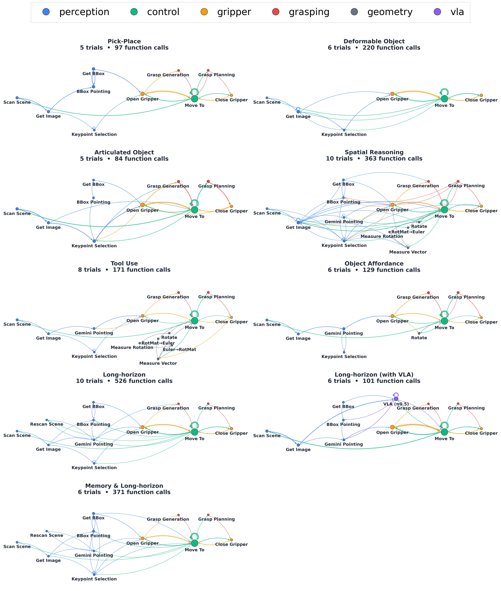
Replanning evidence. In a separate 71-trial log analysis, 47 of 63 initially failed subtask instances later received a logged success judgment (74.6%). This conditional statistic is distinct from human-scored trial completion. See Table 5.
Maestro Guides VLA for Efficient Action
MAESTRO’s library includes π₀.₅ as a callable pick-and-place module; the main benchmarks do not invoke it. This separate study evaluates repeated pick-and-place steps with size-based semantic ordering on “clean up the table, largest object first.” Invoking π₀.₅ increases mean progress from 89 to 94 and reduces mean wall-clock completion time from 11′18″ to 4′59″, a 2.3× speedup on this task. MAESTRO retains its long-horizon planning and reactive replanning.
"Clean the table by putting all the items into the bowl, from big size to small size."
| Method | Progress ± SE | Time |
|---|---|---|
| Maestro w/o π0.5 | 89 ± 5.1 | 11'18" |
| Maestro w/ π0.5 | 94 ± 4.9 | 4'59" |
| π0.5 | 17 ± 9.1 | 2'16" |
| π0 | 21 ± 6.6 | 2'58" |
| Gemini Robotics | 80 ± 3.0 | 11'53" |
Maestro with and without π0.5 as a callable pick-and-place tool, on "clean up the table, largest object first." Mean task progress (0–100; higher is better) with ±1 standard error across five trials per method (SE = SD / √5, in percentage points), and average wall-clock completion time. Table 7.
Code improvement across trials
After each trial, the VLM reviews the execution record and uses the reflection as in-context guidance for the next attempt. We demonstrate this mechanism on one open-cabinet case study, starting from the least successful initial run.
The initial straight-line pull achieves 35% progress. A hinge-based arc reaches 70%; post-grasp stabilization reaches 85%; and a refined trajectory with incremental orientation tracking reaches 100%. Across the initial run and three further trials, the generated code changes from a straight pull to an arc policy with grasp stabilization.
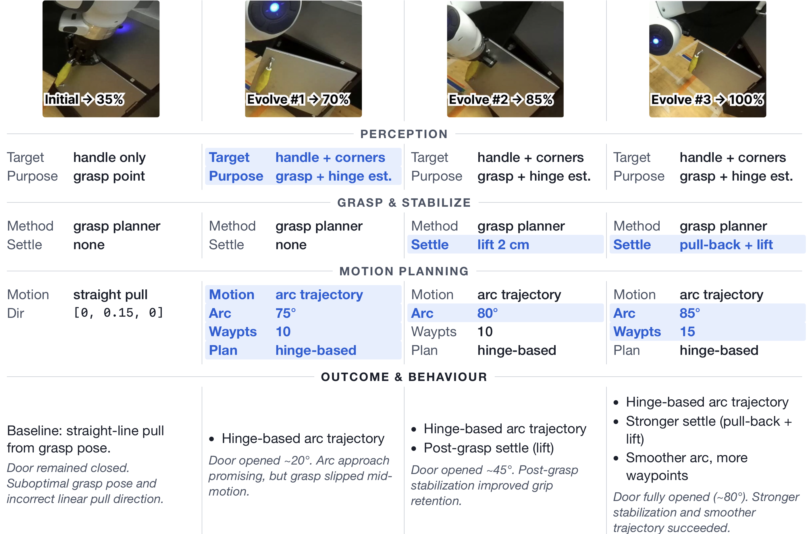
The cross-trial evolution loop wraps Maestro's per-trial execution loop: each trial is planned with the accumulated across-trial history H in context, and the trial's trace is appended to H for the next attempt.
Require: task T, initial image I0, tool library M, system prompt Psys, VLM π, max trials N, per-trial substep budget S
1 H ← ∅ # across-trial history
2 for trial n = 1 … N do
3 hn ← [ ]
4 c ← πplan(Psys, T, I0, H) # plan task; emit code for first substep
5 for substep k = 1 … S do
6 (o, I) ← Execute(c; M) # run substep code to completion
7 append (c, o, I) to hn
8 (σ, c) ← πreact(T, c, o, I, hn) # judge substep, then emit next or replanned code
9 if σ = TaskComplete then break
10 H ← H ∪ { hn } # persist trace as in-context history for next trialAutonomous seed collection
Bowl from Shelf
Wiping with Cloth
Tether augments 10 autonomous MAESTRO seed demonstrations; humans reset the workspace between rollouts.
We pair MAESTRO with Tether, which augments seed demonstrations through correspondence-driven trajectory warping. In a two-task study, MAESTRO provides 10 autonomous seed demonstrations instead of human-teleoperated seeds. A human resets the environment between rollouts, varying object placements and, where applicable, instances.
On Bowl from Shelf, MAESTRO + Tether achieves 95% versus 100% for human-teleoperated Tether; on Wiping with Cloth, the reported success rate is 88%. These results show that MAESTRO-generated demonstrations can serve as seeds for downstream data augmentation in these two tasks.
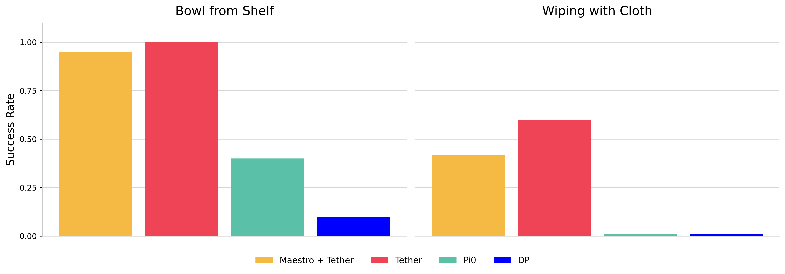
Limitations
Recovery is limited when a tool is systematically wrong in a way the agent cannot observe or route around. Remaining failures concentrate in perception and low-level control. Calling a VLM at each planning and replanning step also makes MAESTRO slower than end-to-end VLA policies; reducing latency and compute cost remains future work.
A human audit of 372 non-idle step-level judgments across 61 logged trials found 89.8% accuracy, 85.0% success precision, and 99.0% recall. Completion judgments can still be wrong: 22 of 55 positive completion judgments were incorrect. This audit measures monitor judgments, separately from human-scored task outcomes. Full monitor audit (Appendix M).
BibTeX Citation
@inproceedings{shi2026maestro,
title={{MAESTRO}: Orchestrating Robotics Modules with Coding Agents for Zero-Shot Generalist Robots},
author={Shi, Junyao and Yang, Rujia and Chao, Kaitian and Wan, Selina Bingqing and Shao, Yifei and Lei, Jiahui and Qian, Jianing and Le, Long and Chaudhari, Pratik and Daniilidis, Kostas and Wen, Chuan and Jayaraman, Dinesh},
booktitle={Conference on Robot Learning (CoRL)},
year={2026},
url={https://openreview.net/forum?id=BxW31Dilgn}
}